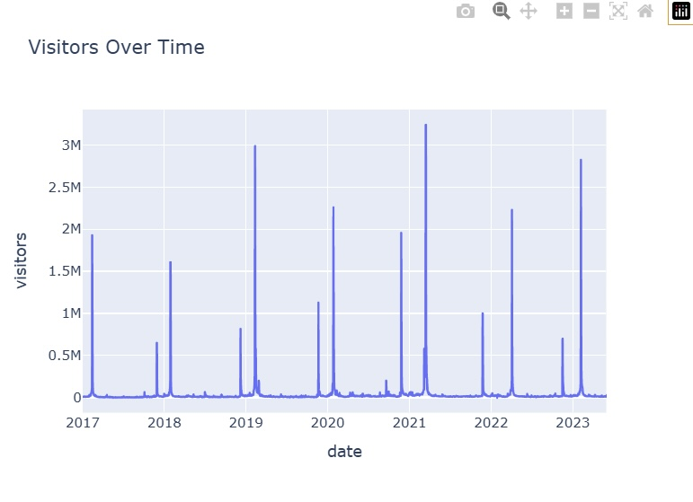
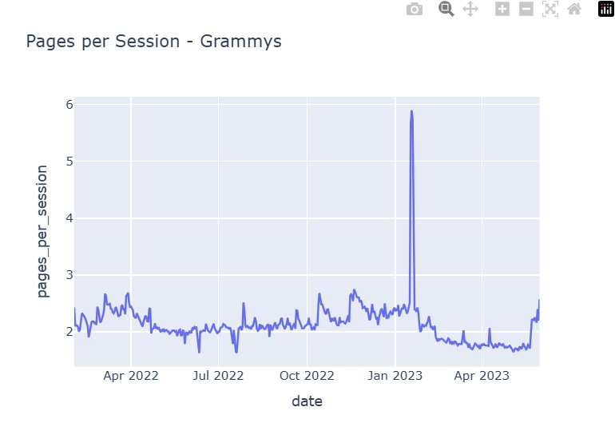
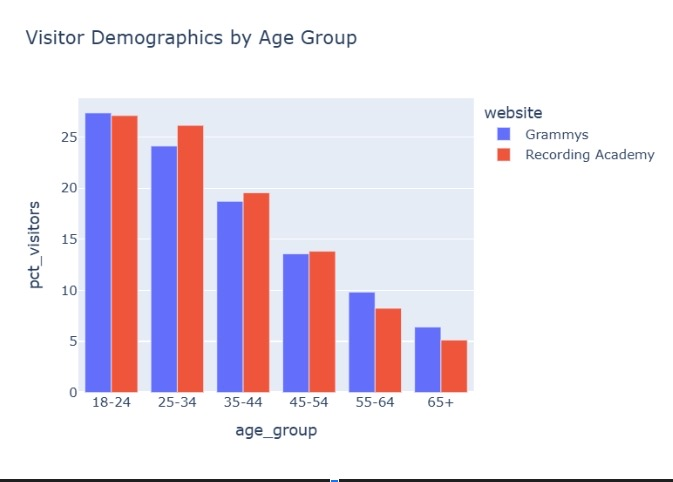
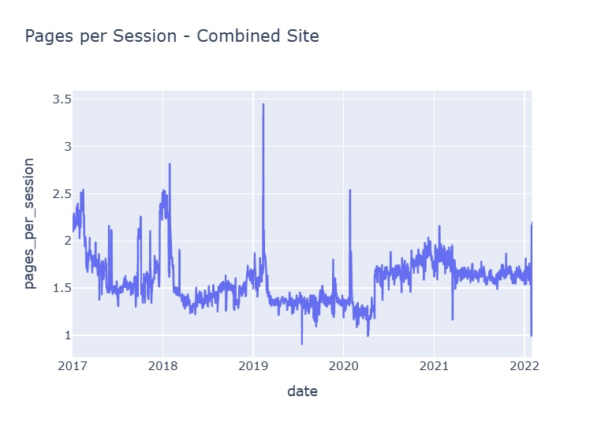

Analyzing Website Performance — Grammy Awards
Website traffic + engagement + demographics analysis using Python.
Project Overview
This project analyzes website performance around the Grammy Awards event. I explored traffic trends over time, engagement metrics, and demographic breakdowns to identify patterns and insights.
Tools & Skills
- Tools: Python, Pandas, Plotly, Jupyter Notebook
- Skills: Data cleaning, time-series analysis, visualization, insight writing
Questions I Answered
- How did visitor traffic change over time around the Grammy event?
- How did engagement (ex: pages per session) change over time?
- Which age groups/demographics made up most visitors and engagement?
Key Insights
- Identified traffic spikes aligned with major Grammy-related time periods.
- Measured engagement trends (ex: pages per session) and how they shifted over time.
- Compared demographics to understand which groups were most represented.
Note: Replace the bullets above with your real findings (2–6 bullets is perfect).
Visual Highlights

Visitors Over Time: Visitor traffic spikes align with major Grammy-related events.

Pages per Session (Grammys): Engagement peaked significantly around awards season.

Demographics by Age: Younger age groups (18–34) make up the largest share of visitors.

Combined Engagement: Overall site engagement shows steady long-term behavior with spikes.